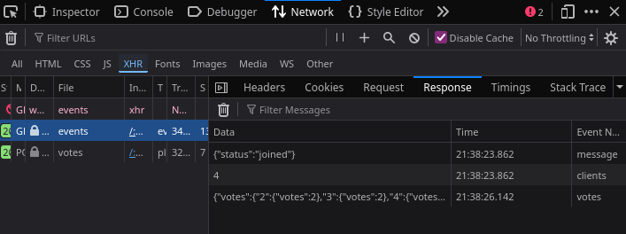

class: center, middle # Server Sent Events (SSE) Webnesday 2026 Roman Ehrbar --- # Agenda - Motivation - Basics - Comparison to WebSockets and Long-Polling - Debugging SSE - Pitfalls - Scaling SSE - Usages of SSE --- # Motivation - Learn something new - Share and discuss ideas - Simple "fist-of-five" app for sprint events ??? There were 3 main factors that motivated me to do this talk: Learn a new technology. Learn about myself and how do I appear on stage. Webnesday is a great place to share and discuss ideas. Is it really worth it or are there any blind spots. - Quick feedback. - Time limit and goal for focussed work. "fist-of-five": - Unreliable over the webcam or chat. - Filters **blur hands** (background) or image is bad lit. - Moderator is **biased** to see only good results. - Calculating **average** is hard on the spot. --- # Server - Express based for simplicity. - Using _bun_ runtime. - Serves static files and API. - Keeps connection open for each client. - Accepts votes from clients. - Sends updates to each client. --- # Server - Register route handler for `/events`. - Headers signal client to keep the connection alive. - `response` will never be closed. ```typescript app.get('/events', (request: express.Request, response: express.Response) => { const headers = { 'Content-Type': 'text/event-stream', 'Connection': 'keep-alive', 'Cache-Control': 'no-cache' }; response.writeHead(200, headers); // ... } ``` ??? - More code on the following slides. --- # Server - Store each connected client. - Remove disconnected clients. ```typescript // ... const clientId = self.crypto.randomUUID(); const newClient = { id: clientId, response }; clients.push(newClient); // Handle client disconnecting and remove them from the list receiving updates. request.on('close', () => { console.log(`${clientId} Connection closed`); clients = clients.filter(client => client.id !== clientId); sendClientCountToAll(); }); // ... ``` ??? - Save the response object to send updates to the client. - Listen to the `close` event on the request to detect disconnections. --- # Server - Sending event to all connected clients. - `event`: Identifier for the type (optional). - `data`: The data field for the message. - Double new lines `\n\n` are required to distinguish events. - Otherwise concatenated. - Data needs to be serialized (e.g. `JSON.stringify()`). ```typescript function sendClientCountToAll() { clients.forEach(client => client.response.write( `event: clients\ndata: ${clients.length}\n\n` )); } ``` ??? - Call this function when the data was updated, e.g. in another route handler. - The unclosed `response` object will be used, which was stored earlier. --- # Client - Subscribes to events from the server at `/events`. - Handle the events as you like. - Deserialize data if required. ```javascript const events = new EventSource('/events'); events.addEventListener("message", (event) => { // Handle event without type. }); events.addEventListener("votes", (event) => { // Handle event: votes writeDebug(`received votes: ${event.data}`); renderVotes(JSON.parse(event.data)); }); ``` --- # Demo <iframe width="400" style="position: absolute; top: 0; right: 0; height: 100vh" src="https://webnesday-sse-166601820595.europe-west1.run.app/" frameborder="0"> ??? Reset server: <a href="/manage.html">/manage.html</a> --- # Comparison to Websockets - Bidirectional - Upgrade vom HTTP - No connection limits (up from 6) - Binary - Manual reconnection - Adds complexity - Acceptable Proxy Support ??? - SSE are not the only way for real time updates. - SSE is unidirectional, server to client. - But just use fetch to send to the server. - On top of HTTP (all newer versions) - Text only (encode binary as Base64) - Simple setup - Most proxies can handle SSE without issues, WS less so. - SSE is baseline since 2020, but available since 2011. --- # Comparison to Long-Polling - Works in legacy systems (Server keeps connection open) - High overhead - Manual reconnection ??? - Call server as soon as previous request has finished. - Server keeps connection until some data is available or a timeout occurs. - Server and client retry connections often. --- # Debugging - Browser Developer-Tools - Network Monitor - Request might be marked as completed. - Enable _Event Name_ column. - Errors might be visible in the console (e.g. interruptions). <p></p> ??? - New messages are added to the existing request, which might be marked as completed. --- # Debugging 2 - `curl` - Raw text output.  --- # Debugging 3 - Man-in-the-Middle proxy - Might close the connection. - Output is garbled. - Required for debugging non-browser clients. - _Bruno_ and _Postman_ support it. ??? - Proxies will have an influence over the connection. Check your settings and documentation. --- # Pitfalls - Only 6 connections per domain on HTTP/1.1 - 100 or more on HTTP/2 (negotiable) - Delayed detection of closed connections up to 15 min. - Use sensible timeout and keep-alive messages - Firewalls/Proxies terminate connections prematurely - Use keep-alive messages - Battery powered devices might limit networking. ??? Pitfall roughly translates to **Fallstrick/Falle** in German. - Connection limit is same as for other resources. - Delayed detection is due to **roundtrip-timeouts** and **tcp resubmissions**. - Some Firewalls/Proxies terminate every connection after a specified time or inactivity. Keep-alive messages might help. --- # Pitfalls 2 - If _event type_ is not specified, events might not be visible. - `.onMessage()` only sees unspecified ones - same for `.addEventListener('message')` - no wildcard available - Lost messages - Use `id` in message, which is reflected in `Last-Event-ID` header on reconnects. - Replay all messages between the ID and the most recent. - Only cookie based authentication - Headers cannot be modified - Some frameworks take too much control. ??? - _event type_ is optional. When using a specific one, the event handler also needs to be configured. - To replay messages, they need to be stored. Client might process lots of outdated messages. - E.g. bun abstracts away some simple methods to broadcast to all clients. - Higher learning curve and additional concepts to master. --- # Scaling out - Handle thousands of connections. - Multiple server instances for load balancing and failover. - Clients will be connected to different instances. - Update needs to be routed to the correct client. - Filter messages to clients that are interested in them. - Options: - Store messages centrally (pub/sub) - Balance related clients to same node - Use dedicated SSE service ??? - Ideally, you want to show your project to the public. - Keeping track of clients will eat up memory and CPU on the server. - Failover loses all server memory. - Not every client needs to see every message: save resources. - Messages are stored centrally, e.g. redis cache - Each server needs to see if there is an interested client. - Balancing on query parameters or location, e.g. a poker room - Dedicated SSE services exist and might offload some complexity. --- # Usages - Used in AI Agents and chats to stream each token. - MCP transport for remote server (aka _Streamable HTTP_). - News feeds and sport scores. - Dashboards with realtime updates. - Stream server logs. - Progress updates on long running tasks. --- # Summary - Simple setup (server + client) - Automatic reconnection - Slow adoption of an old standard - Prototype feels snappy, ideas for improvements - Time limit for focussed learning did help ??? - Maybe ask your llm for ideas. - Ask for the next date. --- # Resources - https://developer.mozilla.org/en-US/docs/Web/API/EventSource - https://html.spec.whatwg.org/multipage/server-sent-events.html - https://blog.openreplay.com/websockets-sse-long-polling/ - https://rxdb.info/articles/websockets-sse-polling-webrtc-webtransport.html Slides + Demo: https://github.com/rehrbar/webnesday-sse